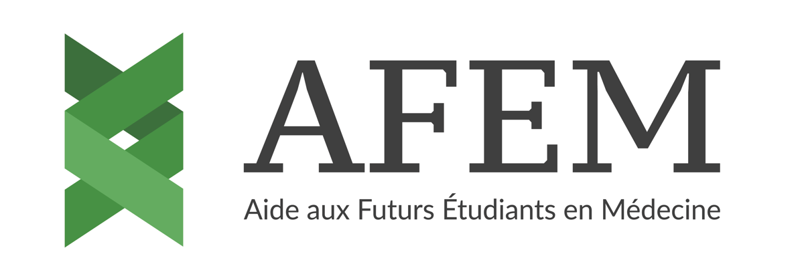

Association à but non lucratifDes étudiants en santé viennent expliquer à vos élèves la réforme des études de santé de 2027 et leur raconter, sans filtre, comment se passe vraiment une première année. Une intervention gratuite et purement informative.
L’AFEM — Aide aux Futurs Étudiants en Médecine — est une association à but non lucratif fondée en 2020, juste après la réforme PASS / L.AS.
Elle est née d’un constat simple : face à la complexité de la réforme, les lycéens et leurs familles manquaient d’informations fiables. Son objectif est que chaque élève motivé ait les mêmes chances, quels que soient son lycée et ses moyens.
Nos outils et nos interventions sont gratuits, et le resteront.
Une information claire pour tous, sans condition de ressources ni de lieu.
Des contenus conçus et vérifiés par des professionnels de l’éducation et de la santé.
Après la fin de la PACES en 2020, le PASS et la L.AS disparaissent à leur tour : à la rentrée 2027, une voie d’accès unique les remplace. Un vœu Parcoursup, une première année en blocs, deux chances pour les filières MMOPK : vos élèves de Terminale en seront la première promotion.
Qui mieux que des étudiants qui l’ont vécue il y a un ou deux ans pour raconter, sans détour, ce qui attend vraiment vos élèves ?
Fin du PASS et de la L.AS, voie d’accès unique, vœu Parcoursup, première année en trois blocs, deux chances pour les filières MMOPK.
Le rythme des cours, le volume de travail, les examens, l’organisation au quotidien : ce qu’on ne trouve pas dans les brochures.
Des étudiants passés par la première année : les doutes, les méthodes qui ont marché, les rebonds possibles — et ce qui reste vrai avec la réforme.
Un temps d’échange ouvert, y compris pour les questions qu’on n’ose pas poser aux adultes.
Pour un ou plusieurs groupes de Première et de Terminale, avec ou sans les parents.
Des échanges individuels avec les élèves et les parents, et la présentation de nos outils gratuits.
Un format plus interactif, idéal pendant une heure de vie de classe ou d’orientation.
Gratuit et en accès libre sur afem-edu.fr, il permet à chaque élève d’estimer ses chances d’admission en première année de santé, faculté par faculté, à partir des données réelles des années précédentes.
Ses notes, ses spécialités de Terminale et son académie d’origine.
Avec les moyennes des admis, les spécialités et les taux d’acceptation par académie.
Un classement personnalisé des facultés, avec des probabilités d’admission.
Un quiz de compatibilité pour repérer la faculté la plus adaptée à son profil.
Une estimation de ses chances de réussite en première année de santé selon son profil.
Des QCM par matière, corrigés en détail, pour découvrir le format des épreuves.
Gratuit. Aucun coût pour l’établissement ni pour les familles.
Adaptable. Date, horaire et durée calés sur votre emploi du temps.
Clé en main. Nous apportons tout ; un vidéoprojecteur suffit.
Non commercial. Une information neutre, sans aucune démarche de vente.